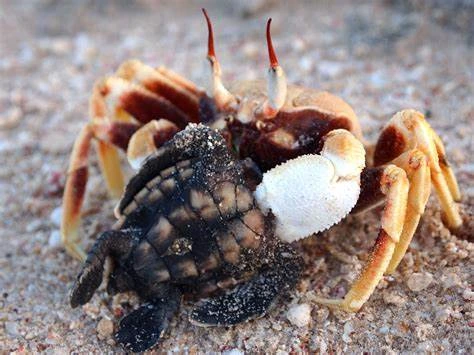
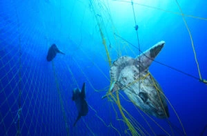

Threats Faced by Turtle Around The World
Alhough these majestic sea dwelling creatures have been inhabiting the oceans all over the world (except the Arctic Ocean) for over 200 Million years, their existence in the future is unfortunately made unsure by a variety of threats. Hence urgent attention and conservation efforts are reuired to ensure their survival and also to maintaon the balance of the marine ecosystem. These threats can be majorly categorized as natural threats and threats caused due to human involvement
Natural Threats
- Climate Change
- Predators
- Diseases
- Marine Debris
Human Caused Threats
- Habitat Loss
- Bycatch and Illegal Trade
- Pollution
- Oil Spills
Natural Threats
Climate Change |
|---|
 |
Climate change significantly affects the lifecycle and habits of sea turtles in dangerous and unhealthy ways. For example increasing water levels in seas and more frequent storms result in the erosion of nesting beaches thus reducing the already limited nesting habitats available. Similiarly, alterations in global temperature negatively affects the sex ratio of sea turtle hatchlings as incubation temperature is a deciding factor. Warmer temperature leads to unbalanced hatchling ratios which may affect their future generations |
Predators |
|---|
|  |
Throughout their lifecycle sea turtles are hunted as prey by various types of predators which causes another serious threat to their survival. Land dwelling predators like dogs, crabs and foxes detect, dig up and feed on eggs. Then upon hatching, the hatchlings must make their way to the ocean which makes them vulnerable to predators such as crows and seagulls which swoop down on the hatchlings. Although adult sea turtles are less prone to predation they are still often targeted by marine predators including killer whales and crocodiles. |
Diseases |
|---|
Diseases are another threat which impacts the continuous existence of sea turtle populations. The most common disease seen among sea turtles called "Fibropapillomatosis" causes the growth of benign tumors on their skin, eyes and other internal organs and can result in the impairment of key capabilities such as mobility and eyesight which can eventually lead to death. Sea turtles are also susceptible to other less known diseases such as "Herpesvirus" which causes respiratory and digestive issues and death. |
Natural Disasters |
|---|
Sea turtles face significant threats from natural disasters. Events like hurricanes, storms, and tsunamis can wreak havoc on nesting beaches, causing erosion or complete destruction. The resulting debris can hinder their nesting attempts, while strong waves can wash away their nests. These natural disasters not only affect the survival of sea turtles but also disrupt their reproductive cycles and overall population dynamics, making their conservation efforts even more challenging. |
Human Caused Threats
Habitat loss |
|---|
Habitat loss holds a primary place in the threats to the survival of Sea turtles caused by human involvement. The developmen of coastal reigon leading to the construction of tourist holes and other such infrastructure end in the destruction of nesting beaches. This loss may interrupt their reproductive cycles thus reducing their capacity to lay eggs and hence potnecially affect the turtle population |
Bycatch and Illegal Trade |
|---|
|  |
Bycatch refers to the unintentional entangelement of sea turtles in nets, lines and traps that often reult in injury or death. it not only affects adult turtles but also poses a danger to hatchlings on their way from nesting beaches to the ocean. At the same time illegal capture and trade of turtles for their meat, shells and eggs is recognized as another critical threat. |
Pollution |
|---|
Pollution of oceans which also includes marine debris is another factor which puts the existence of sea turtles at risk. Plastic bags, bottles, and other marine debris can be mistakenly consumed as food which causes severe injuries and malnutrition. Similiarly some activites of these turtles such as orientation, foraging their communication may be disrupted due to noise pollution shipping traffic, recreational boating, etc... |
Oil Spills |
|---|
 |
Oil Spills, no matter whether accidental or from intentional release from ships and other fuel based modes of water trasnport have devastating effects on the live of sea turtles. This oil coats their bodies thus hindering their movements, and their ability to obtain oxygen. Furthermore, internal diseases may also result from comsuming prey that have been exposed to the oil.. |
Methods of Conservation & Protection of Sea Turtles
Methods of conservation and protection play a vital role in safeguarding sea turtles and their habitats. Conservation efforts include establishing protected areas, such as marine reserves, where turtles can nest and feed without disturbance. Conservationists also focus on reducing threats from human activities by promoting sustainable fishing practices, implementing regulations against poaching and habitat destruction, and raising awareness about the importance of sea turtle conservation. These methods aim to ensure the long-term survival of these magnificent creatures.
Lets get a clearer idea of how to conserve sea turtles
1. Conservation of Nesting Beaches :- It is essential to preserve and restore beaches where sea turtles commonly nest in. This can be done by implementing measures including monitoring and protecting safety of nesting sites, erecting structures to prevent preadtion and disturbance, etc...
2. Protection of Nests :- Meausres such as identifying and marking nest locations, relocation of nests in vulnerable and unsafe places to more sheltered areas, constructing mesh cages and other such structures to fend off predators can be taken to protect nests of sea turtles
3. Reducing Fisheries Bycatch :- Cooperating with fishermen and laying don regulations to minimize unintentional capture of sea turtles in another important conservation measure. Using turtle friendly techniquesmodifying fishing gear are some such regualtion that may contribute to prevent this threat.
4. Public Awareness Campaigns :- Taking necessary steps to educate tourists, local communities and the general public regarding the importance of sea turtles to the marine ecosystems and the vital threats to their survival can promote responsible behaviour on beaches while discouraging poaching and consumption of sea turtle products
5. Scientific Research and Monitoring :- Another primary method of conserving the sea turtle population is by conducting scientific research and monitoring their activites to gahter data such as their population ratios, nesting behaviours, migration patterns, and how effective conservation efforts are.